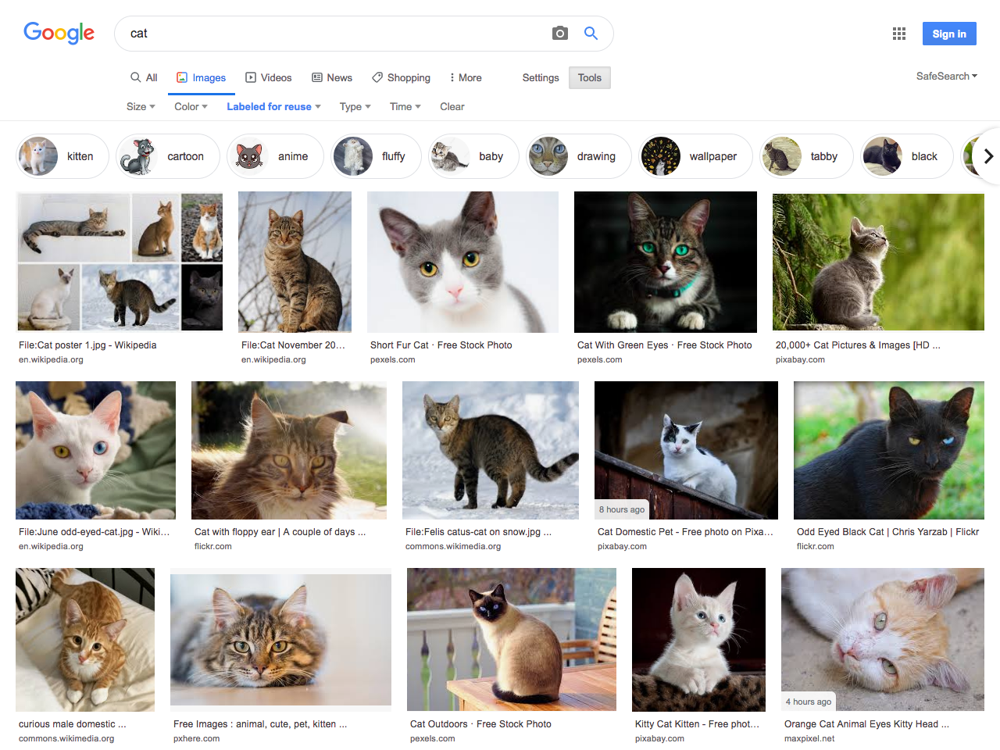
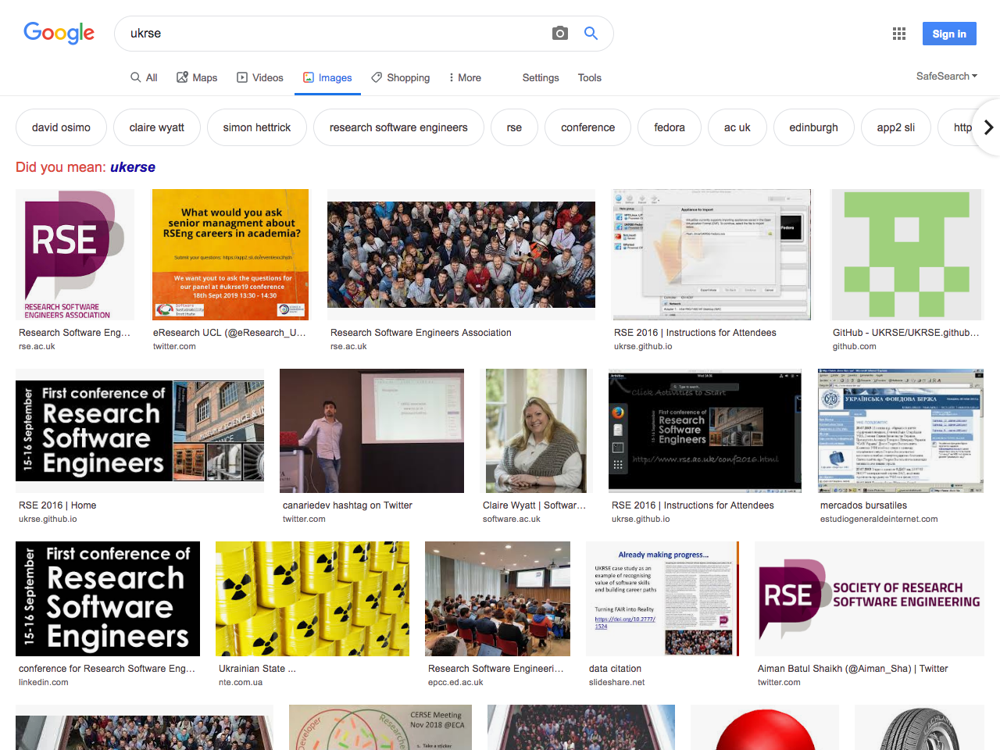
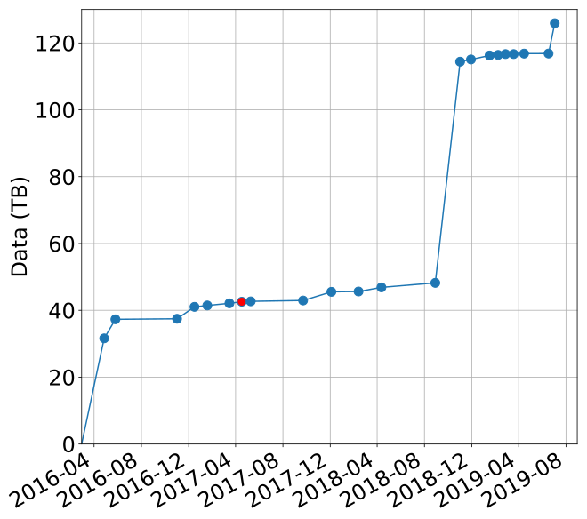

How to build and run an international open-data image repository
Simon Li
Open Microscopy Environment
University of Dundee
Overview
Who am I?

Open Microscopy Environment
Why do we need the IDR?
Open-science
Data should be
Findable
Accessible
Interoperable
Reusable
- A set of guidelines for publishing scientific data endorsed by G20 leaders
- But this is just the minimum
Make it easy for others to use your data
Imaging data is complicated
No it's not




Yes it is!
- 100s of proprietary file formats in the Life sciences
- Many different imaging modalities and scales
")


A public repository for reference datasets and images of interest to a broader community of users
Provides the expertise needed to curate and publish life-science imaging data effectively
▶▶▶ idr.openmicroscopy.org
IDR in numbers (August 2019)
5,341,278 images
19,076,141 files
125 TB
Behind the scenes
OpenStack private cloud
EMBL-EBI
Main components
OMERO: Open-source enterprise platform for managing imaging data in the Life Sciences

Bio-Formats: used by OMERO to read and write over 150 image formats including metadata

PostgreSQL: used by OMERO.server to store all metadata and file information

Nginx: Loadbalancer proxy and caching

JupyterHub: Co-located platform for analysing data in the IDR
Storage: Mix of cloud (read-write) and NFS (read-only)
Data submission and curation


How did we get here?
What we started with

Current IDR: 125 TB
What was new?

Infrastructure as code
- Apply the software development process to managing servers
- Clear separation between data and applications
Demo 1, October 2015

First lesson: Verify your infrastructure at every step
Demo 2, May 2016
How do you debug and test a 50+ (now 100+) TB system?
Official release: April 2017
Where are we now?
Who's working on the IDR?
 Sebastien Besson
Sebastien Besson
 Jean-Marie Burel
Jean-Marie Burel
 Mark Carroll
Mark Carroll
 David Gault
David Gault
 Riad Gozim
Riad Gozim
 Simon Li
Simon Li
 Dominik Lindner
Dominik Lindner
Melissa Linkert
 Josh Moore
Josh Moore
 Will Moore
Will Moore
 Petr Walczysko
Petr Walczysko
 Frances Wong
Frances Wong
Curation: A critical factor in the success of the IDR (remember: FAIR)
- Metadata for millions of images is manually curated
- Constant stream of new datasets
This is one of the largest public bioimage publication systems running in the world
 Jason Swedlow
Sebastien Besson
Jean-Marie Burel
Mark Carroll
David Gault
Riad Gozim
Simon Li
Dominik Lindner
Jason Swedlow
Sebastien Besson
Jean-Marie Burel
Mark Carroll
David Gault
Riad Gozim
Simon Li
Dominik Lindner
Melissa Linkert
 June Matthew
Josh Moore
Will Moore
Petr Walczysko
Frances Wong
June Matthew
Josh Moore
Will Moore
Petr Walczysko
Frances Wong
 Rafael Carazo-salas
Rafael Carazo-salas
 Alvis Brazma
Alvis Brazma
 Ugis Sarkans
Ugis Sarkans
 Simon Jupp
Simon Jupp
 Tony Burdett
Tony Burdett
Aleksandra Tarkowska
 Anatole Chessel
Anatole Chessel
 Richard Ferguson
Richard Ferguson
 Helen Flynn
Helen Flynn
 Kenny Gillen
Kenny Gillen
 Roger Leigh
Roger Leigh
 Simone Leo
Simone Leo
 Gabriella Rustici
Gabriella Rustici
 Eleanor Williams
Eleanor Williams
Former
members